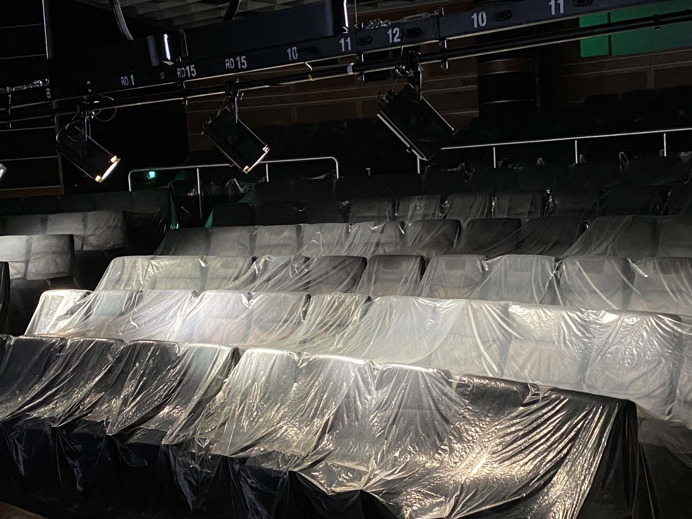
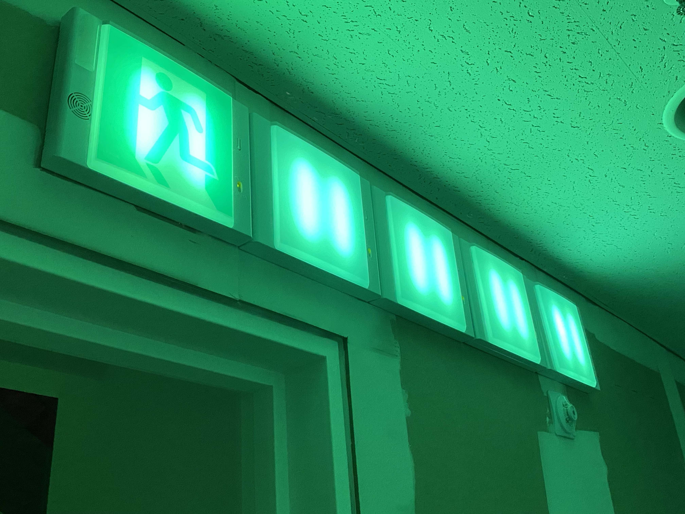
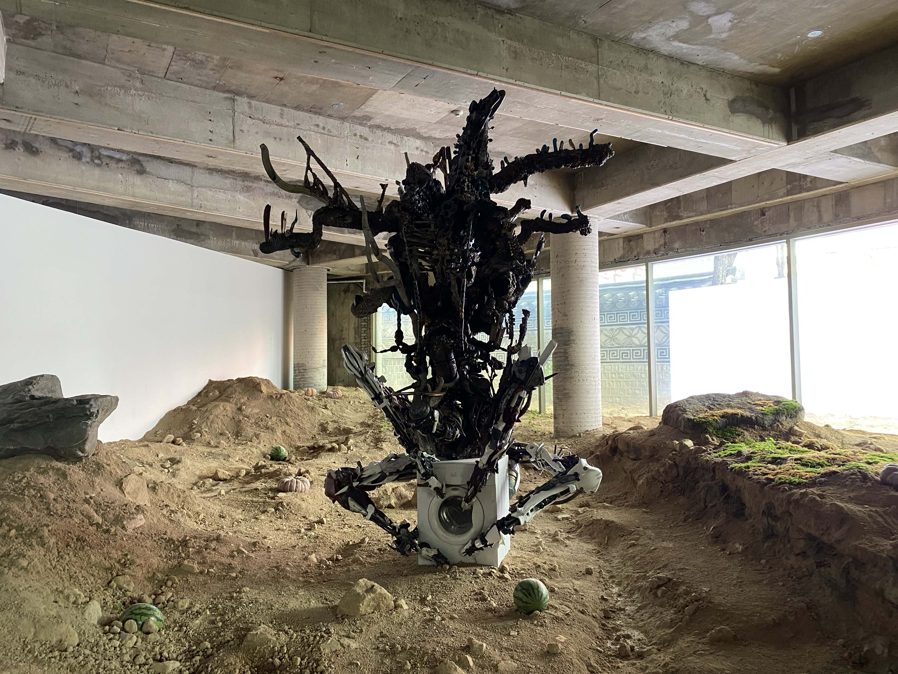
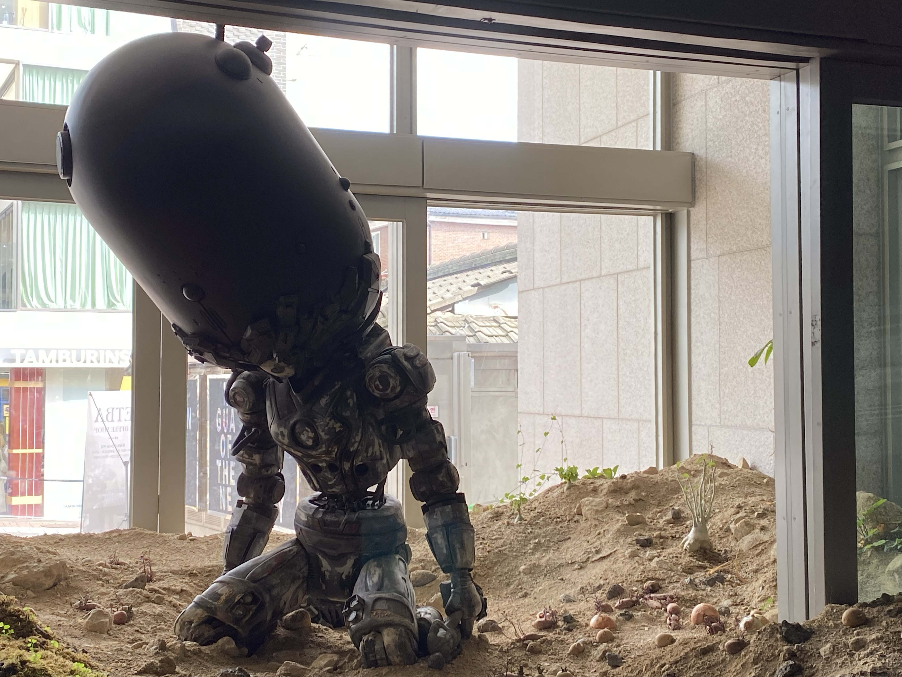
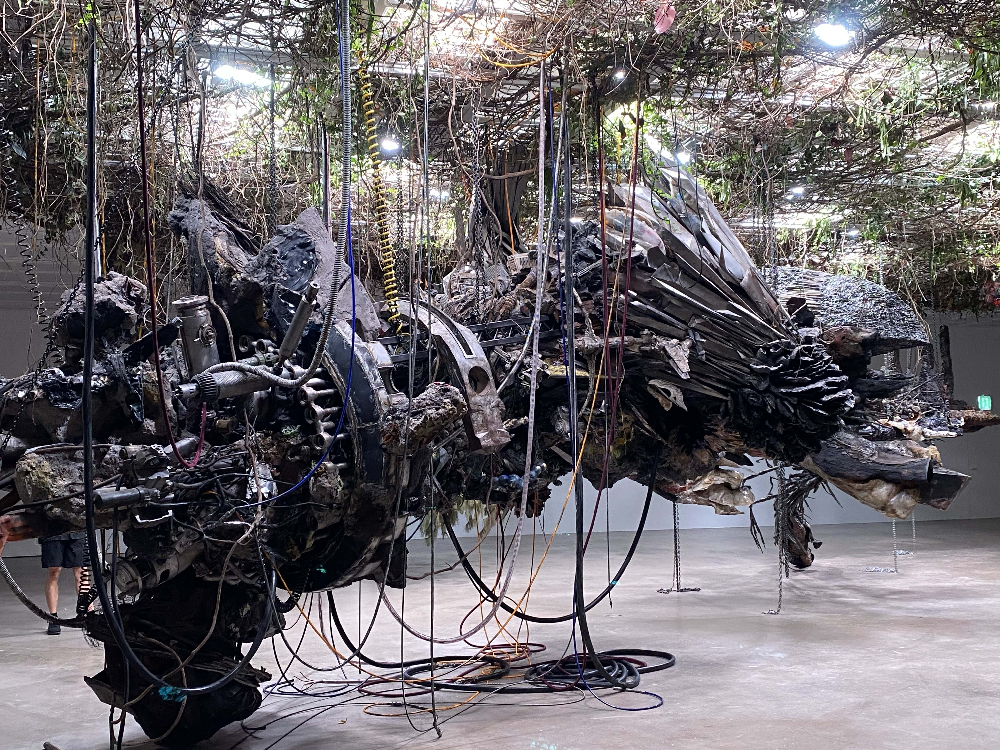

최초로 거울이 만들어지기 전을 생각해 본다. 아니, 그보다 더 전을 생각해 본다. 이 물질에서 대상이 비친다는 개념을 모를 시절. 인간은 그 물질 속에 있는 상
상을 보며 ‘이것이 나와 같다’고 하려면 물리적인 그 상과 관념적인 상이 일치해야 한다. 상
지금의 인간은 다르다. 유아기 때부터 아주 선명한 거울 앞에 서서 최초로 물리적인 자기 상을 관측할 수 있다. 자기 의지에 의한 행동을 그 상이 모방하는 것을 보며 ‘이것은 내가 아닌 다른 누군가가 될 수 없음’을 본능적으로 인지한다(혹은 부모를 통해 배운다). 관념적인 자기 상을 정보로 습득해 둔다. 어느 화장실에나 있는 거울, 거리의 창문 등을 통해 물리적인 상과 관념적인 상의 일치를 시도 때도 없이 겪는다. ‘나의 생이 맺힌다’는 이 현상이 자기를 배반하지 않는다는 것을 알게 된다.
그런데 누군가 평소처럼 거울 앞에 섰더니 완전히 다른 상이 있다면 어떨까. ‘모른다’는 감각과 ‘다르다’는 감각의 무게감은 빈 그릇을 쓰는 것과 쓴 그릇을 다시 쓰는 것의 차이처럼 다르다. 그리고 이 다르다는 인지에서 ‘무엇이 무엇과 다른가?’라는 질문으로 이어질 것이다. 관념적인 상이 물리적인 상과 다른가, 아니면 물리적인 상이 관념적인 상과 다른가. 아마 물리적인 상이 관념적인 상과 다르다며 그 거울을 의심할 것이다. 이 의심에는 일종의 지배 위계가 전제되어 있다. 그가 떠올린 관념적인 상을 거울이 비추며 맞춰야 한다는 것. 그리고 거울은 그를 말하는 것이 아니라 그의 관념적인 상을 말해야 한다는 것. 우리는 그와 거울을 관찰하는 입장에서 생각해 볼 수 있다. 그가 진술하는 관념적인 상, 거울이 진술하는 물리적인 상. 어느 쪽이 거짓인가?
미술관 ‘아트선재센터’는 안국역에서 십 분 남짓을 걸어 재동을 완전히 가로지르고 소격동 초입에 다다르면 보인다. 그리고 정문을 통해 들어간다. 관람객과 데스크에 있는 직원은 눈을 마주치며 ‘저는 관람하러 온 사람입니다’와 ‘관람하러 오셨나요?’라는 무언의 신호를 자아낸다. ‘예매했습니다’나 ‘관람하러 왔습니다’ 등을 선언하여 신호를 명확히 주고받고, 직원으로부터 안내 사항을 들은 뒤 본격적으로 관람을 시작……해야 하는데……아트선재센터는 9월부터 그 정문을 흙으로 막았다. 중문과 정문 사이에 반쯤 차 있는 흙. 그리고 그 위에 전원이 꺼진 기계체 같은 것이 무릎을 꿇고 있다. 어떤 사건으로 폐허가 되어버린 미래의 미술관. 필요한 물건을 찾기 위해 건물로 들어서게 될 인물. 낡고 무거운 등산 가방이라도 멘 것 같은 기분. 서울의 한복판에서 갑작스럽게 다른 시간대에 포획된다. 별도의 공간에서 입장권을 받으면 지하로 들어가 ‘아드리얀 비야르 로하스’(b.1980)의 개인전 《적군의 언어》를 관람할 수 있다.
계단을 통해 지하로 내려가며 작가의 사인인 오르네르 둥지를 지나고, 본래 상영관으로 연결되던 입구가 본격적인 시작이다. 그 시작점에 있어야 할 월 텍스트 전시 서문은 뭔가에 긁힌 채 대부분 훼손되어 있다. 안쪽으로 들어가면 아트선재센터의 상영관이 나오는데, 그곳 역시 아주 오랜 시간 전에 폐쇄된 듯, 객석은 넓은 반투명 비닐로 덮여 있다. 상영관 천장의 조명은 바로 아래 객석을 비추고 있고, 영사기는 영사실 창문에 붙은 작은 판에 빛을 쏘고 있다. 그 판에는 밤처럼 푸른빛이 도는 색 위로 인간의 손바닥이 하얗게 찍혀 있다. 본래 강연이나 영화를 상영했을 이 공간은 그 기능을 완전히 상실해 버린 어느 시간대의 모습을 보여준다. 그러나 작가는 관람객을 단지 미래의 시공간으로 옮기는 것에 목적을 두지 않는다. “더 이상 ‘가까운 미래’라는 개념을 믿지 않게 된 것 같”다는 작가에게 이곳은 미래의 시공간이라기보다, “제대로 준비되지도 않은 채 당도한 수많은 미래들” 중 하나가 있는 “현재”1)다. 우리는 이미 어느 인간의 미래에 있다. 운전자가 손을 놓고도 스스로 가는 차량을 상상하던 이들의 미래에 있으며, 인간과 감정적으로 교류하는 인공지능을 상상하던 이들의 미래에 있다. 그런 이들에게 이것들이 익숙한 이들은 미래의 인간과 다름없다. 단지 ‘세대 차이’로 규정되어 익숙해져 있을 뿐이다. 그러니까 낡고 큰 등산 가방을 메고 폐허가 되어버린 미술관으로 들어와 물건을 줍는 듯한 ‘인물’은 어느 허구적 사건이 아니라 ‘지금’의 일이라는 것이다. 상영관을 나오면 마주하는, 불필요하게 반복되거나 픽토그램이 지워진 비상구 유도등처럼, 어떤 일에 의한 익숙한 것들의 변이 역시도.


계단을 통해 1층으로 올라가면 미술관 바깥에서 보았던 것을 마주한다. 방대하게 쌓인 흙, 세탁기를 붙잡고 있는 기계체, 무릎을 꿇고 죽은(?) 듯한 기계체, 비워진 데스크, 마찬가지로 훼손된 전시 서문, 갑자기 놓여 있는 수박 등. 미술관의 익숙한 틀과 미술관에 익숙하지 않은 사물 및 형상이 혼재되어 있다. 공간은 어느 한쪽으로 규정되지 않는다. 완전히 새로운 곳도 아니고 완전히 익숙한 곳도 아니다. 작품은 침묵하여 설명하지 않는다. 관람객은 미술관의 이러한 변이를, 완전한 외계 적의 침략으로 인해 일어난 일로 간주할지 모른다. 하지만 이 형체, 그러니까 작가의 연작 중 하나인 〈상상의 종말Ⅳ〉(2024)은 이곳의 환경에 의해 탄생한 기계체다. 해당 작품에 쓰인 작가의 ‘타임 엔진’은 “비디오 게임 엔진과 인공지능, 그리고 가상 세계를 결합한 일종의 디지털 시뮬레이션 도구”2)다. 가상이라는 점에서 현실과 거리가 떨어져 있는 듯하지만, 이 가상 세계는 생물, 생태계, 사회, 정치 등 현실 세계에 있는 다양한 요소들이 포함된 곳이다. 해당 요소들은 가상 세계 속에서 뒤섞이며 물질을 만들어 내고, 작가는 현실 세계에 있는 물질을 통해 그것을 구현한다. 즉, ‘현실 세계↔가상 세계’의 경로를 통해 현실과 가상의 경계를 흩뜨리는 것이다. 게임 캐릭터를 눈앞에 마주했을 때 이 상황을 현실이라고 불러야 할지 가상이라고 불러야 할지 알 수 없어지는 것처럼 말이다. 작가는 이에 관해 “인간이 세계에 형식을 부여하는 것이 아니라, 세계가 스스로 작용해 현실을 만들고, 그 현실이 다시 물질을 창조”하는 것이며, 이는 “창작 행위에 대한 근본적인 존재론을 전복하는 방식” 3)이라고 말한다.


관람객이 이를 외계의 것으로 간주하는 일은 해당 작품의 물리적인 상에 관해 관념적인 상이 없기 때문이다. 지난 시간 동안 습득하지 못한 정보라서 이를 현실 세계의 질서에 없는 것으로 판단한 것이다. 하지만 미술관을 폐허로 이끈 듯한, “적”으로 보이는 이 기계체들은 뒤섞이지 않던 현실 세계의 질서가 뒤섞이며 탄생한 일종의 ‘혼종’이다. 사실 게임 캐릭터같이 가상 세계의 요소가 눈앞에 있다면, 이 상황은 가상의 일이 아니라 명백히 현실의 일이다. 그런데도 이를 꿈이라고 간주하는 것은 세계가 언제나 ‘나’의 관념적인 상들이 질서와 이해를 지키며 구성되어야 한다는 권력자로서 입장을 갖고 있기 때문이다.
이 공간은 관람객에게 있는 관념적인 상들을 나타내는 공간이 아니다. 관람객에게 없는 물리적인 상을 나타내며 그들에게 새로운 상을 생성하거나 기존의 상을 수정하게 하는 공간이다. 물리적인 상이 관념적인 상과 일치하도록 세계를 관측해 온 방식은, 그리고 익숙한 방식으로 질서와 이해를 조직하는 습관은 새롭게 조정된다.
구역이 나뉜 전시는 관람객이 다른 구역으로 이동하면서 전시실을 하나씩 ‘마주’하는 것으로 이루어진다. 커튼을 젖히거나 복도를 걷거나 계단을 오르는 등 다음 전시실을 마주하기 전까지 작품에서 잠시 벗어나는 ‘휴지
그러나 이 전시는 관람객이 ‘미술관의 상’을 자연스럽게 떠올리기 어렵다. 데스크는 비어 있고, 화장실은 폐쇄되어 있고, 월 텍스트는 훼손되어 있고, 휴지의 구간으로서 계단과 그곳에 있는 창문은 긴 천으로 가려져 있다. 1층 전시실을 보고 2층 전시실로 이동하는 휴지의 구간에서 관람객은 더 이상 자기에게 소속되어 있던 관념적인 상을 떠올릴 수 없다. 이곳의 물리적인 상은 그 소속에서 벗어난다. ‘미술관이 있다’고 말하기 어려워진다. “미술관을 더 이상 안정된 보존의 장소가 아닌, 끊임없이 분해되고 변이하며 재생되는 하나의 생태적 존재”5)가 되어 있기 때문이다.
생태적 존재로서 공간이 물리적인 상을 ‘나타내는 것’은 인간(작가, 관람객)이 보유하고 있는 공간의 이미지를 찬탈하고 그 권력을 해체하는 일이다. 위에서 말한 조정을 공간(세계)이 주어의 자리로 들어가 ‘이루고 있기’ 때문이다. (아트선재센터를 자주 방문한 ‘단골’이라도, 혹은 그럴수록) 관람객은 공간의 이 새로운 질서에 의해 기존에 있는 미술관의 상을 전복당하는 비주체의 위치에 놓인다. 공간은 “알고 있다고 믿는 감각이 끊임없이 의심받는 과정을 스스로 경험하게 만”들고 “감각의 주체였던 인간은, 공간이라는 낯선 질서 앞에서 더 이상 중심이 아니”6)게 된 것이다.

공간은 2층 전시실에서 커다란 두 형체를 나타낸다. 천장을 뚫고 들어와 불시착한 모습이다. 철골과 파이프, 그 주위에 거꾸로 매달린 나무와 식물. 이 형체와 이 풍경이 무엇인지 정확히 알 수 없다. 어떤 일이 있었는지 알 수 없다. 어쩌면 해독할 수 없을지 모른다. 현실 세계의 질서를 흔들며 탄생한 가상 세계의 혼종이기 때문이다. 이것을 명명할 수 있는 단어는 이것을 보러 온 관람객에게 이미 없고, 전시도 이에 관해 침묵하며 단어를 주지 않는다. 1층에서부터 단색 조명이 설치되어 있고 전선이 난잡하게 깔려 기능을 상실한 화장실에 관해서도. 관람객에게 기능을 맞추어 소속하던 미술관의 상은 질서를 흐트러뜨리며 불시착한 새로운 상에 의해 흩어진다. 내 전시실! 내 화장실! 내 상영관! 내 데스크! 내 비상구 유도등! 내 미술관!……. 관념적인 상과 명명할 언어를 뺏긴 관람객은 그저 공간을 배회하게 된다.
당신은 누구냐는 질문은 ‘나는 이런 사람이다’라는 의식이 잠재적으로 전제되어 있다. ‘당신’이 ‘내가 알고 있는 나’와 다른 형태라서 존재를 읽을 수 없다는 의미로 풀 수 있기 때문이고, ‘당신’과 ‘나’가 다르다는 것은 ‘나’에 관한 인지가 되어 있는 상태기 때문이다. 즉, 상의 결렬이며 이에 관한 인식과 호기심이며, 미지로서 두려움을 경계하는 것이다. 자기가 정복하고 있는 상을 돌아보는 일은 물리적인 상과 차이가 있을 때 일어난다. 익숙함에 관해 말하는 것은 익숙함의 바깥에서 발화되는 일이기 때문이다. 불화에서 감각하는 이질성과 불편함을 통해 ‘내가 알고 있는 그 상’이 무엇인지 생각한다. 인간은 온전히 자기만으로 자기를 인식할 수 없다. 타자나 물질 등 자기의 외부가 필요하다. ‘나’에게 익숙하지 않은 무언가. “‘적’이라는 완전한 타자성은 낯설고 위협적이지만, 동시에 우리가 처음으로 자기 자신을 인식하게 한 거울이기도 했다”6)는 작가의 말처럼. 의아한 것을 마주할 때 그것을 탐구하는 눈은 외부를 보고 있을 것이지만, 결국 마주하는 것은 내부가 된다.
끊임없이 또 다른 상을 마주하며 관념적인 상이 전복되고, 때로는 관념적인 상이 물리적인 상과 일치하면서 상을 증명하고, 또 전복되고, 또 증명하고……. 도대체 정답이라는 게 있는 건지 없는 건지 알 수 없을 때, 어느 쪽이 자꾸 거짓말하는 건지 헷갈릴 때, 이 순간들을 마주하게 된다면 나아가야 하는 방향은 색출이 아니다. 적응이다. 최대한 많은 상을 인정하는 것. 그리고 너무 많은 물리적인 상을 들이는 것.
말했듯, 결국 마주하는 것은 내부다.
새롭게 탄생한 관념적/물리적인 상을 볼 때, 우리는 기존의 ‘나’를 마주하게 된다. 기존의 상을 조정한 새로운 ‘나’를 만든다. 어제와 다른, 언제나 최초의 오늘에서. 그러므로 최초의 ‘나’를.
마지막으로 3층에 가면, 전시실은 유리로 막혀 있다. 그 뒤로는 작은 모닥불이 넓은 공간을 덩그러니 차지하고 있다. 계속 타오르고 있는 실제 불이다. 어두운 공간을 자기만의 크기로 밝히고 있다. 그래서, 그 불을 보려는 관람객은 필연적으로 유리에 비치는 자기 상을 가까이 마주할 수밖에 없다.
불은 무엇을 태우고 있는가? 무엇으로부터 타고 있는가?
2026.01.04.